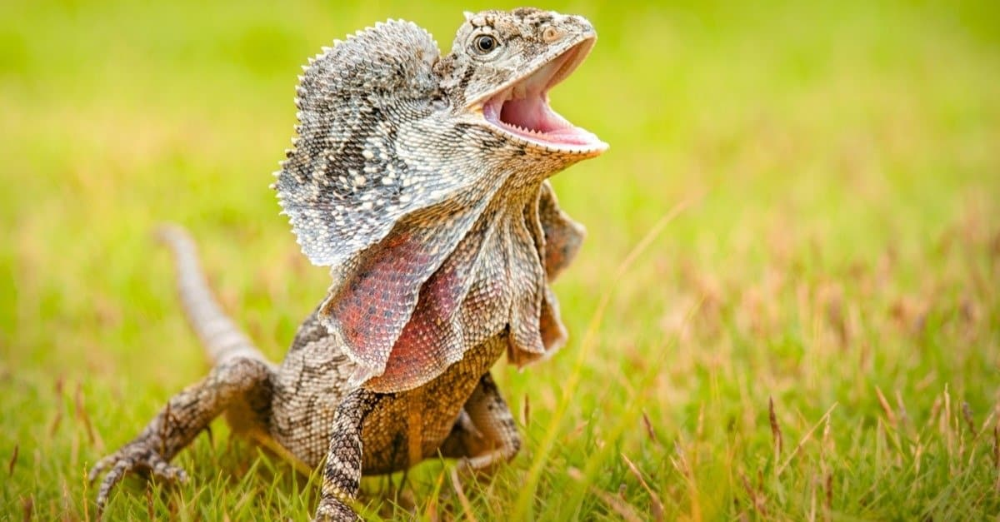

Mittens is an adorable kitten with a strong sense of adventure. She is looking for a home that will encourage her inquisitiveness and give her plenty of opportunities to explore her environment. If you are interested in meeting Mittens click here for more information!
Barksley and Cletus are two high-energy bundles of love who are ready to devote themselves to a family that loves life as much as they do. Their favorite activities are walks, runs, jogs, races, sprints, swims, and cuddles. If you are looking for a pair of friends to share everything with, click here.
Kaiju is a recent addition to our family here at the shelter, and is a distinguished gentleman who appreciates the value of a good nap in the sun as much as the need to put on a show for visitors. As frilled lizards are outside the norm for the friends we care for at the shelter, be sure you are well-informed of their needs before looking to adopt. Here is a useful link to various resources useful to someone interested in getting a new scaly friend.